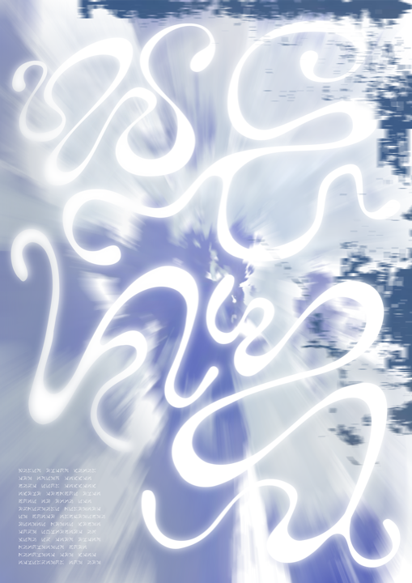

Graphics



The Library Cafe
The Library Cafe is a hybrid cafe, bookshop, and community centre based in Melbourne, Australia.
The Library Cafe aims to provide a space for community interaction and engagement. They nurture local creative and political communities by offering a welcoming physical space in which they can meet to share and discuss ideas important to them. They facilitate workshops and events in which local community members and come in to teach, learn, and participate in discussion. The Library Cafe believes meaningful education is best achieved in a warm, collaborative environment.
Their book selection is carefully curated to reflect a diverse range of perspectives and voices, with a focus on art and design publications, critical theory and contemporary fiction. Sit down with a book and enjoy a coffee, the space invites relaxation and self education.
The Library Cafe's design philosophy is inspired by the goal to create a compelling, modern identity that will help it stand out from other businesses. The identity should reflect the company’s unique qualities and focus on community and education.


Nuada
Design for mock bionics company Nuada. Inspired by the ultra-utilitarian design of non-consumer products such caution labels and battery graphics. Work includes custom typographic logo based on modular shape system.


Synapse
Design for Synapse’s mix series. Designs feature audio-reactive generative adversarial network (GAN) videos trained on artist specific data-sets. The series explores the relationship between visual and audio experiences. Synapse logo designed by Maximilian Bufardeci.


Projections for Synapse + Neurocrank event at Grace Darling Hotel. In collaboration with Rubi Dinardo.


Aisemic
A computer-generated asemic typeface. The work seeks to highlight the issues present in the misunderstood and enigmatic AI systems that are increasingly making decisions that affect billions of lives. The typeface is presented in an online type sampler which utilises a Markov chain algorithm to generate paragraphs based on significant economic, political and philosophical writings. The typeface is unreadable to humans, but words can be revealed through interaction with the web-page. Plaese message for the font file.


Arrival
Arrival is a collaborative research-led project undertaken by myself and Fergus Arundel. The project aims to visualise historic and contemporary events surrounding Australia’s relationship with immigration through a web-based digital space.


Artificial Nature
A visual and sonic virtual installation utilising IPCC climate data. The piece juxtaposes the best and worst scenarios laid out by the IPCC in their report, hoping to highlight the power humans still possess in shaping their climate future. The piece in hosted online in a virtual environment.